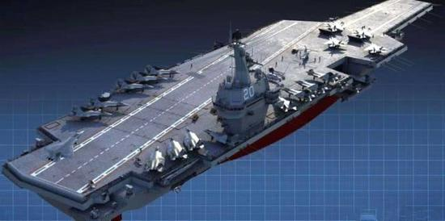
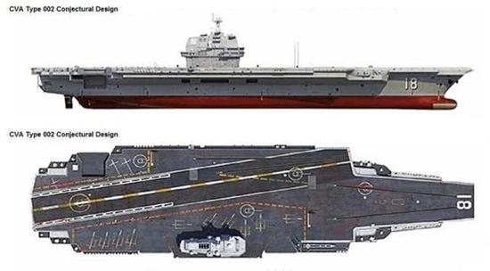
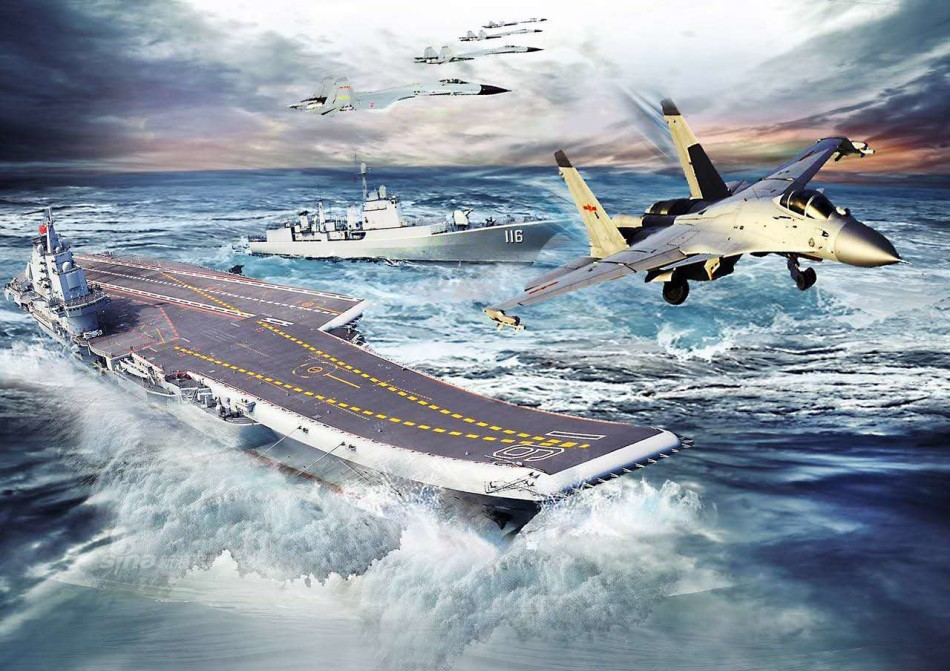
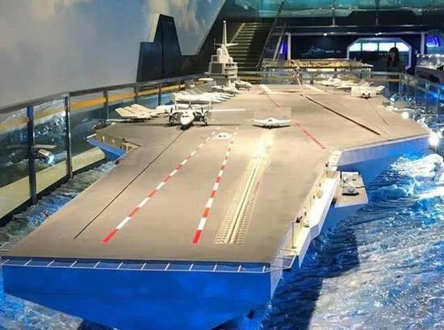

返回上一层
中国第3艘航母亮出3大优点 歼20及隐身无人机将上舰
- 近日，中国第3艘航空母舰，也就是我军第1艘自行设计的航空母舰，已经进入如火如荼的快速建造阶段！ 这一中国完全自主的航空母舰，到底有什么特别之处？会给中国海军带来怎么样的根本改变？
- 
- 对于一个拥有396万平方公里海洋面积的大国来说，拥有一支强大的海军不仅可以捍卫主仅，而且能够在国际舞台上获得更多的话语权。对于中国海军，发展和建造航母，特别是完全自主设计、建造的大型航母，就成为了增强海军战力的最佳途径和不二之选。从“辽宁”号的诞生开始，中国的航母作战力量发展速度，让全世界都感受到了中国海军及军工行业的强大实力与坚强意志。 2012年“辽宁”号正式服役至今已达7年之久，良好的机动性和综合战力表现让世人刮目相看。近期被军迷朋友们所高度关注的中国第一艘国产航母、第二艘航母也已顺利完成了第7次海试，服役时间也是指日可待。
- 
- 而中国第一艘自行设计航母的建造速度同样超过了外界的预期。 简单的说，中国第一艘自行设计航母将摆脱“辽宁”号的苏联式设计局限，改为使用舰载机起飞弹射器的“常规起降”设计，并在排水量、持续作战时间、载机数量等方面取得代差性的提高，从而令我海军战斗力真正达到世界顶尖的水平。 早在2015年年底的时候，中国媒体就证实了中国第一艘自行设计航母已经正式投入建造，进展也是十分的顺利。之后的4年时间里，中国第一艘自行设计航母的消息也是经常位列各大军事网站的头条，无论是建造速度还是设计优化，中国第一艘自行设计航母再次颠覆了过去人们对国产航母的怀疑，优点和亮点尽显其中。
- 
- 下面是这一世界全新设计的航母的几个最大亮点。 一、电磁舰载机弹射系统的应用 从许多资料和照片也能够看到，中国第一艘自行设计航母的甲板是一个“大平板”，从这一点上就能看出，该航母将会装备弹射器，而中国电磁弹射器的发展，令我军这一全新航母注定跨越蒸汽弹射器的阶段，直接启用电磁弹射器。该项技术的应用，对于中国来讲意义重大，在全世界都对电磁弹射技术无法全面掌控的当下，中国完全依靠自身强大的科研实力，自力更生，自主研发，率先突破，让很多国家都无法企及。随着国产航母电磁弹射技术的使用，今后中国航母的舰载机无论是起飞频率，还是针对具体架次情况优化的能力，都会出现非常大的改进，如果是在实战对抗时，留给敌方的反应时间将会更短，打击力度也会更大。
- 
- 二，航母平台增大，令远海大纵深作战能力得到加强 由于有了电磁弹射器，像预警机和电子战战机等固定翼舰载机上舰的问题就会迎刃而解，有了固定翼舰载机，海军整体战斗力就会成倍的增强。在实战中，舰载机深入敌方控制区是一件风险系数很高的事情，很容易遭遇到敌方的防空火力以及战机的攻击。有了固定翼预警机或在电子战战机以后就不用冒这个险，由预警机和电子战机提前掌控敌方情况，从而指挥已方战机对敌军目标实施反制。 此外，这一弹射器可以灵活调节，令较小的作战无人机也可以有效弹射起飞，拓展了舰载机出动和留空作战机型的丰富程度。 三，确保隐身战斗机、无人机上舰的可行性、灵活性 众所周知，我国现在的舰载机是歼-15战机。歼-15的综合性能确实非常强大，但是并不是最先进的战机。而我们也知道，现在的美国正在打造F-35B、C型战斗机为主的下一代舰载战斗机部队。因此，对于我们来讲，也应当以歼-20为基础，改装五代战机上舰。电磁弹射器的灵活性，使得我军未来舰载战斗机的设计简化，可更有效的取得隐身、自重、最大作战起飞重量等关键指标之间的平衡。